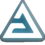
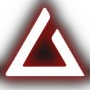
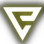
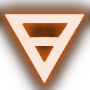

Aard is a powerful repulsive sign. Its original form sends a shockwave directed in one direction.
The upgraded version sends the shockwave in all directions, creating a repulsive wheel.

Igni is an offensive sign. The person throwing it releases a single wave of fire in its basic form. Improved form allows you
to breathe fire for a few seconds.

Quen is a defensive sign. In its original form, it allows you to neutralize incoming attacks.
The next form allows you to heal the caster with blocked damage.
The first form of Yrden forms a circle that slows down enemies.
The second form creates a rune. It attacks nearby enemies.
Axii is a simple magical sign comprised of a hypnotic. It can calm down people and creatures, manipulate their minds or be used to hex enemies, causing them to fight alongside the caster.

It is created by crossing the wrists and acts as a defense against physical attacks, combat magic and hits against walls,
ground and alike